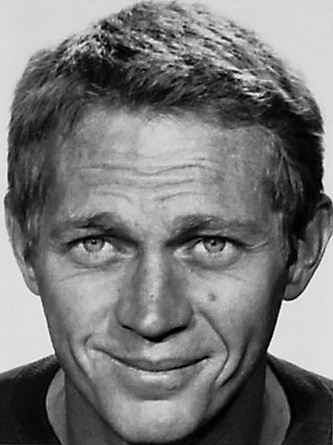
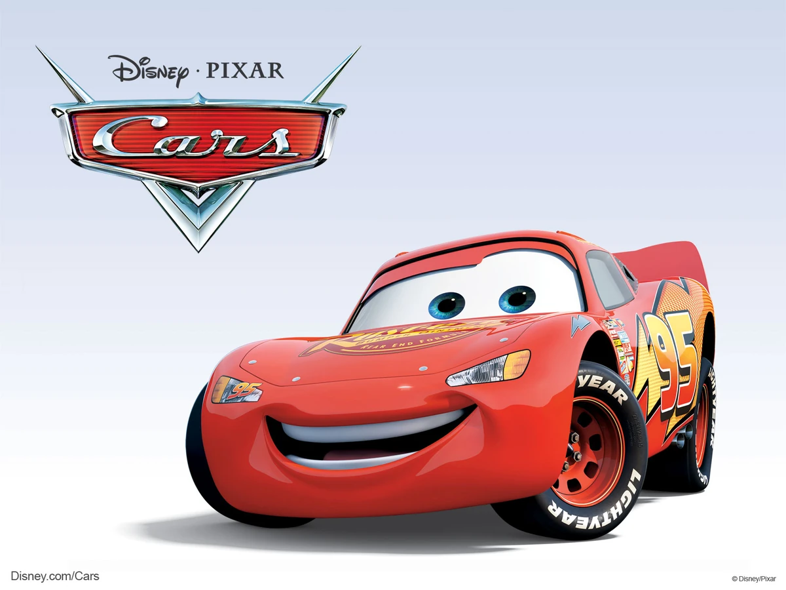
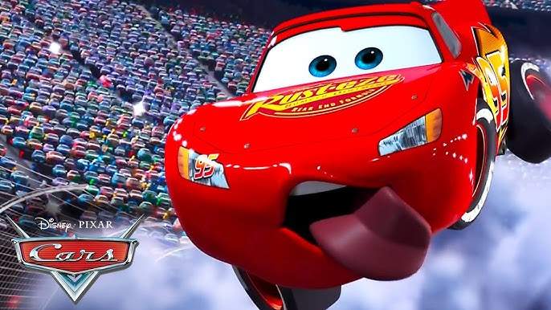
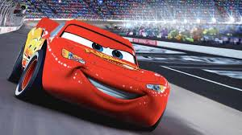
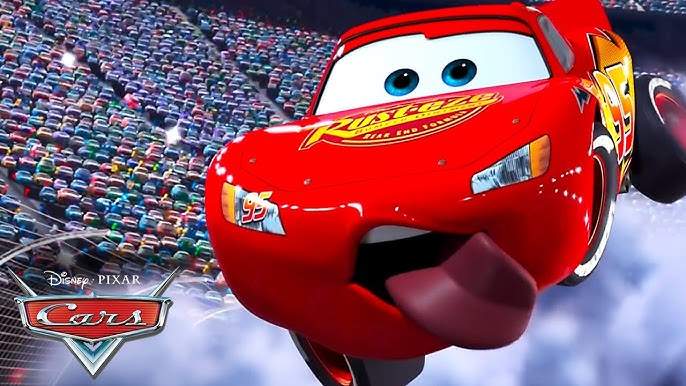
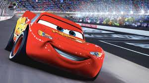

Historia
Origen dentro de la historia
Rayo McQueen, cuyo nombre original es Lightning McQueen, es presentado como un joven y talentoso auto de carreras que compite en la Copa Pistón. Desde el inicio, su origen se construye alrededor de su ambición por ganar y convertirse en el sucesor del legendario corredor Strip "The King" Weathers. A diferencia de otros autos veteranos, McQueen no proviene de una larga tradición de campeones, sino que es un novato que ha alcanzado el éxito rápidamente gracias a su talento natural y su determinación. En la primera película, tras un empate histórico en la carrera final de la temporada, McQueen se dirige a California para disputar la carrera de desempate. En el camino se pierde y termina en el pequeño pueblo de Radiator Springs (nota: entidad no disponible oficialmente, pero parte central del universo), donde su vida cambia. Allí conoce a personajes como Mate y Doc Hudson, quien resulta ser el legendario Hudson Hornet y antiguo campeón. Gracias a Doc, McQueen aprende que el verdadero significado de la victoria no está solo en la fama, sino en la amistad, el respeto y el trabajo en equipo.
Origen como personaje (creación)
El personaje fue creado por el equipo creativo de Pixar bajo la dirección de John Lasseter. Su diseño combina elementos de distintos autos de carreras de NASCAR y deportivos modernos, con una personalidad inspirada en jóvenes atletas talentosos que deben aprender humildad. Su número, el 95, hace referencia al año 1995, cuando se estrenó la primera película de Pixar, Toy Story. Rayo McQueen representa el viaje clásico del héroe: comienza siendo arrogante y obsesionado con el éxito, pero a través de sus experiencias descubre valores más profundos. Su origen no solo cuenta la historia de un corredor, sino la transformación de un campeón en un verdadero amigo y líder.
 Wikipedia - Rayo McQueenInformación
- Campeón de la Copa Pistón
- Gran velocidad y aceleración
- Capacidad para aprender de sus errores
- Carisma y popularidad entre los fanáticos
- Trabajo en equipo y amistad con otros personajes
Top 3 momentos más icónicosdel Rayo McQueen
- Su victoria en la Copa Pistón, consolidando su lugar como uno de los mejores corredores.
- El momento en que decide ayudar a El Rey en la última carrera, mostrando su humildad y espíritu deportivo.
- Su entrenamiento con Cruz Ramírez, donde transmite su experiencia y demuestra evolución como mentor.
Ficha técnica
| Dato | Descripción |
|---|---|
| Edad | Desconocida (representado como joven corredor) |
| Peso | 1,200 kg (aproximado como auto de carreras) |
| Estatura | 1.32 m de altura aproximada |
| Primera aparición | Película *Cars* (2006) |
| Debilidades | Impulsividad y exceso de confianza |
| Alias | El Rayo |
Registro de fans
¡Únete a la comunidad de fans del Rayo McQueen! Comparte tus momentos favoritos, teorías y fan art en nuestras redes sociales. ¡Sé parte de la velocidad y la emoción de ser un verdadero fanático del Rayo!
Galería
.jpg)
 


